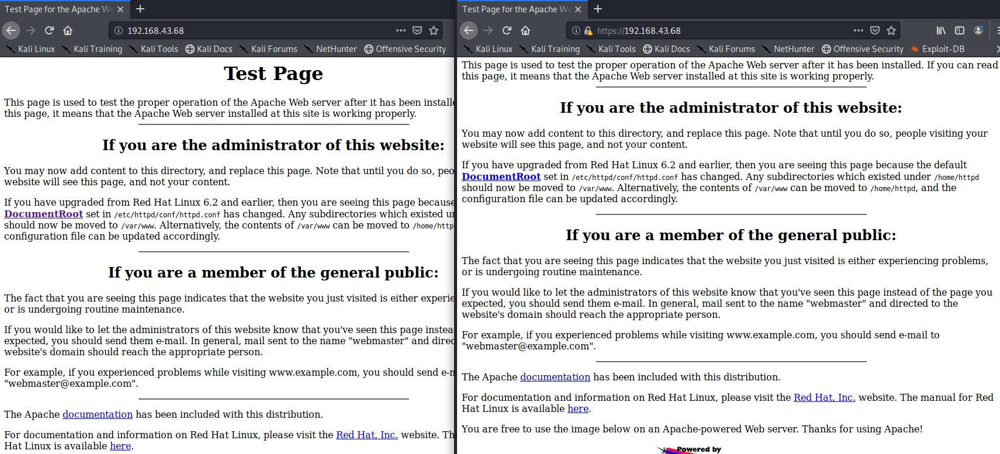

Enumeration is defined as the process of extracting user names, machine names, network resources, shares and services from a system. In this phase, the attacker creates an active connection to the system and performs directed queries to gain more information about the target. The gathered information is used to identify the vulnerabilities or weak points in system security and tries to exploit in the System gaining phase.
So lets move to open ports which hosts websites
Both 80 & 443 ports runnig default Apache webpage

On clicking the documentation we are redirected to bad page but information is disclosed here

After this lets check all the subdirectories hosted over website using Nikto(Web Vulnerability scanning) or Dirbuster
nikto -h 192.168.43.68

Now we will use Dirbuster to enumerate the directories on web

In case of apache find php
In case of IIS find asp,aspx,asm,asmx
When we start it we will get the directories

Now lets move on to SMB on port 139
What is SMB?
The Server Message Block Protocol (SMB protocol) is a client server communication protocol used for sharing access to files, printers, serial ports and other resources on a network. It can also carry transaction protocols
for interprocess communication.
The SMB protocol enables an application -- or the user of an application -- to access files on a remote server, as well as other resources, including printers, mail slots.
During Nmap we found

Its SMB version 2.x but don't know exactly what version it is running?
So first step is to find out the exact version of SMB
So we'll use metasploitto check the version
Launch metasploit using msfconsole

Here we find 1960exploits modules,1094auxiliary modules(enumeration & scanning purpose),336post(post exploitation modules)
Lets >search smb //to search each and every module for smb

Here we search for an auxiliary module to do SMB Version Detection
>use auxiliary/scanner/smb/smb_version
>info

Instead of info you can also write
>options //gives only the important informations

>set rhosts 192.168.43.68
>run

So now we have the SMB version
Let's use another tool to try to connect to SMB service
#smbclient -L \\\\192.168.43.68\\
press enter in password field //anonymous login

Let's try to connect with these fileshare names
#smbclient \\\\192.168.43.68\\ADMIN$ //found that access is denied
#smbclient \\\\192.168.43.68\\IPC$ //Access is given but then deadend
Now lets move on to SSH on port 22
What is SSH?
The SSH protocol uses encryption to secure the connection between a client and a server. All user authentication, commands, output, and file transfers are encrypted to protect against attacks in the network.

But now we don't have the password so it's a dead end
Use #searchsploit <service>

Nessus starts at https://127.0.0.1:8834